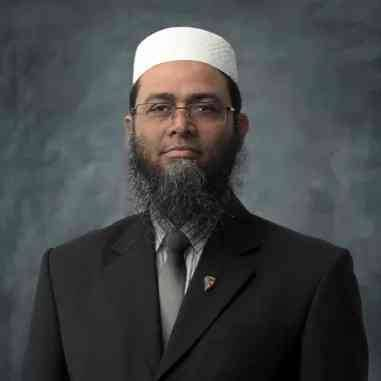
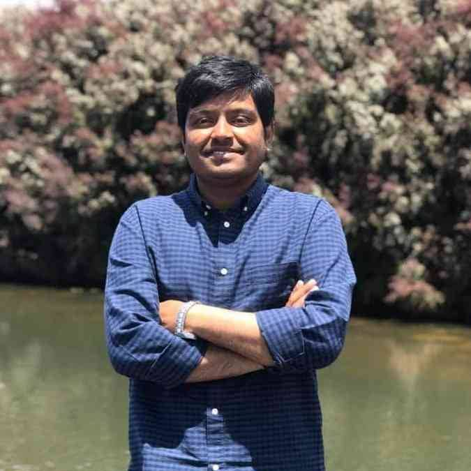
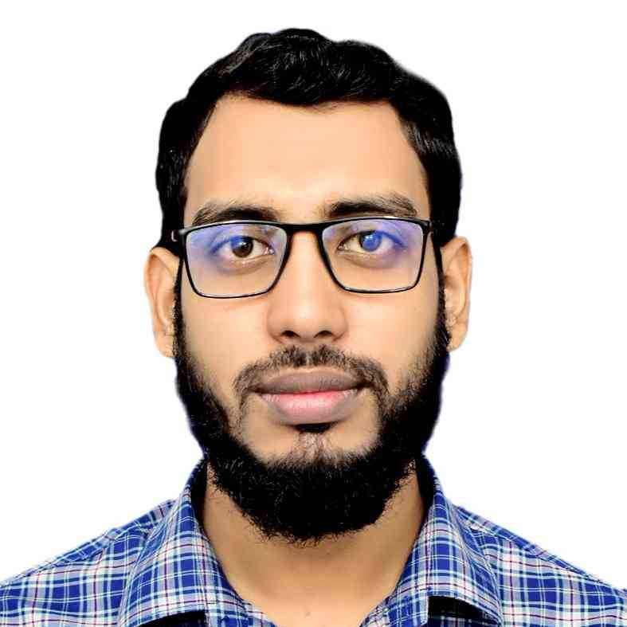
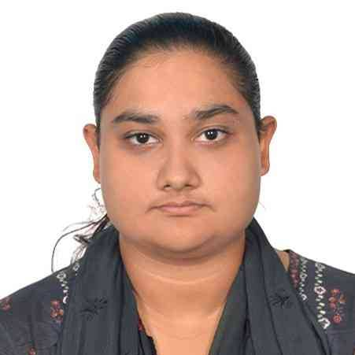
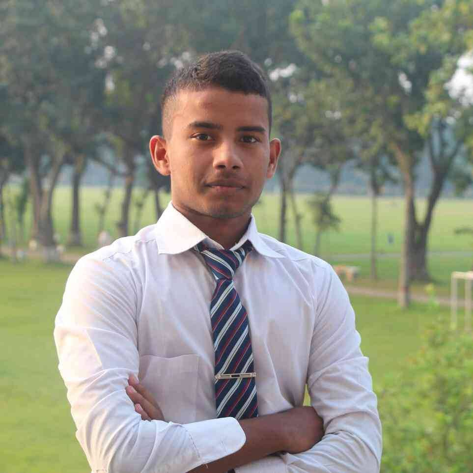
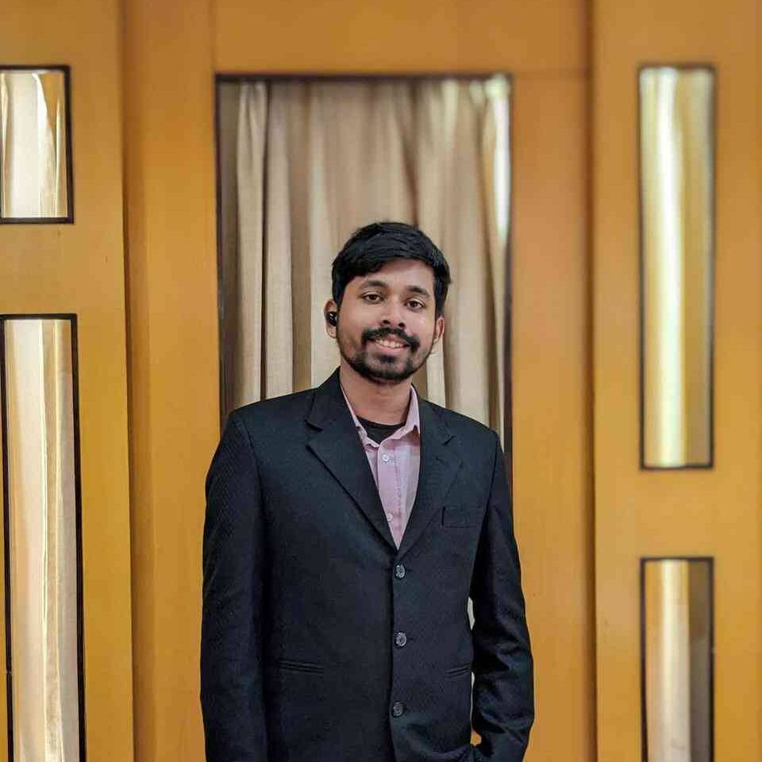
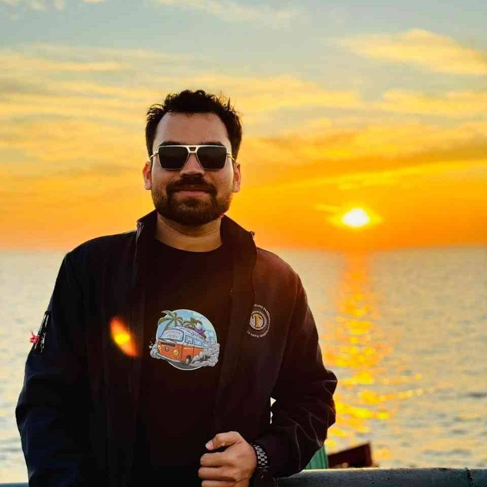
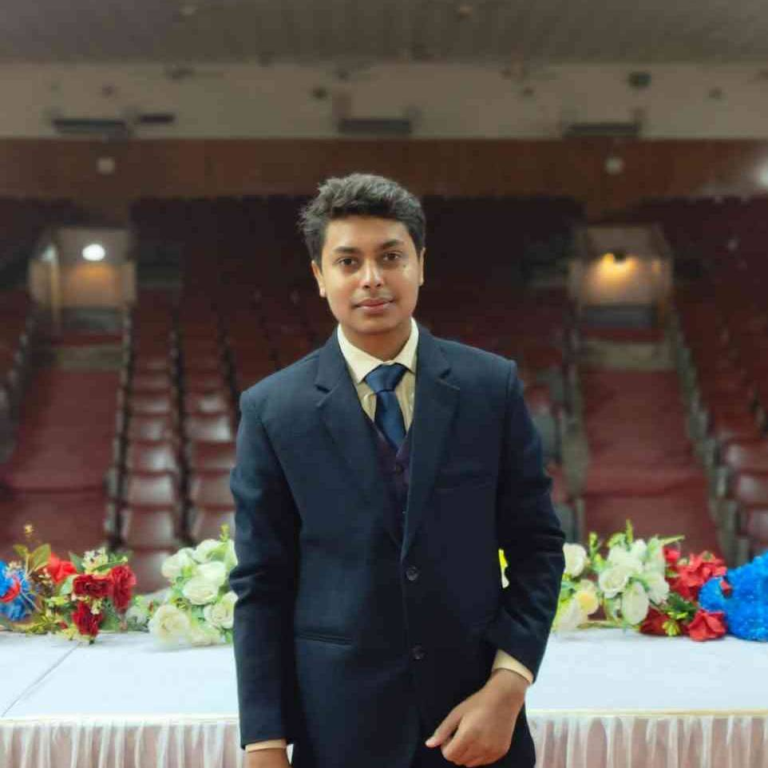

People
Md. Golam Kibria mentors thesis students on diverse topics like hybrid nanomaterials, battery thermal management, and renewable energy systems, fostering impactful research in sustainability and engineering solutions.
Principle Investigator
Md. Golam Kibria
- Website: ruet.ac.bd/kibriaruet12
- Phone: +880-1767277554
- Email: kibria@me.ruet.ac.bd
- Designation: Assistant Professor, Department of Mechanical Engineering, RUET
- City: Rajshahi, Bangladesh
Research Collaborator
I have had the privilege of collaborating with Professor Saidur Rahman from the Research Centre for Nano-Materials and Energy Technology at Sunway University, Malaysia. His expertise in renewable energy and nanotechnology has significantly shaped my understanding and approach to energy research, enhancing the depth and scope of my work.
Professor Saidur Rahman
Sunway University, Malaysia
Collaborating with Professor Bahman Shabani from the School of Engineering at RMIT University, Australia, has been an invaluable experience. His knowledge in hydrogen energy systems and sustainable technologies has provided critical insights, enriching my research methodologies and outcomes.
Professor Bahman Shabani
RMIT University, Australia
Working with Professor Bidyut Baran Saha from I²CNER at Kyushu University, Japan, has profoundly influenced my research journey. His groundbreaking contributions in adsorption systems and thermodynamics have inspired innovative approaches in my studies, particularly in energy efficiency and sustainability.
Professor Bidyut Baran Saha
Kyushu University, Japan
Working with Dr. Barun Kumar Das at RUET has significantly shaped my research journey. His expertise in energy systems and sustainable technologies has inspired me to explore innovative solutions, particularly in renewable energy integration and resource-efficient engineering practices.
Dr. Barun Kumar Das
Rajshahi University of Engineering & Technology, Bangladesh
Collaborating with Dr. Monjur Mourshed at RUET has been a transformative experience in my academic career. His profound knowledge in sustainable urban development and smart technologies has driven me to adopt forward-thinking approaches in my research, focusing on energy-efficient and environmentally resilient solutions.
Dr. Monjur Mourshed
Rajshahi University of Engineering & Technology, Bangladesh
Team
N.M. Morshedul Hque completed his degree under the supervision of Md. Golam Kibria, with a focus on hybrid nanomaterials. His research involved developing and optimizing advanced nanomaterials with enhanced properties for energy and environmental applications. By integrating innovative techniques, his work significantly contributed to sustainable material science, paving the way for breakthroughs in renewable energy and resource-efficient solutions.

N.M. Morshedul Hque
Thesis Topic: Hybrid Nano Material
Md. Sakin Mahamud earned his degree working on hybrid nanomaterials under the guidance of Md. Golam Kibria. His research explored cutting-edge approaches in nanotechnology to create advanced materials with applications in energy storage, water purification, and environmental remediation. His work addressed critical challenges in sustainability, contributing to the development of high-performance, eco-friendly technologies.
Md. Sakin Mahamud
Thesis Topic: Hybrid Nano Material
Nafi is a dedicated student researching battery thermal management under the supervision of Md. Golam Kibria. His work focuses on tackling the complexities of heat regulation in energy storage systems, aiming to enhance efficiency, safety, and lifespan of modern batteries. His innovative solutions hold potential to revolutionize thermal management practices, ensuring reliable and sustainable energy solutions.
Nafi
Thesis Topic: Battery Thermal Management
Fahim Ahmed is actively engaged in cutting-edge research on battery thermal management under the mentorship of Md. Golam Kibria. His studies involve designing advanced thermal solutions that aim to enhance the performance and reliability of batteries. By addressing energy efficiency and sustainability concerns, his work seeks to meet the growing demands of renewable energy applications.
Fahim Ahmed
Thesis Topic: Battery Thermal Management
Shithi Dey Kanka is a researcher focusing on hybrid solar stills under the mentorship of Md. Golam Kibria. Her work combines innovative design methodologies and advanced materials to develop highly efficient solar desalination systems. Her contributions are pivotal in addressing global water scarcity through renewable energy-driven water purification technologies.
Shithi Dey Kanka
Thesis Topic: Hybrid Solar Still
Usma Atiua Anika is a student researching hybrid solar stills under the guidance of Md. Golam Kibria. Her work focuses on integrating advanced materials and system optimizations to create renewable water purification solutions. Her research aims to contribute to sustainable clean water technologies, crucial for environmental resilience.
Usma Atiua Anika
Thesis Topic: Hybrid Solar Still
Sifat is pursuing innovative research in thermal energy storage systems under the supervision of Md. Golam Kibria. His work aims to develop advanced methods for storing and utilizing thermal energy efficiently. His contributions support the transition to renewable energy by addressing challenges in sustainable energy storage and usage.
Sifat
Thesis Topic: Thermal Energy Storage
Utpol is a student under Md. Golam Kibria, focusing on thermal energy storage research. His work explores innovative approaches to storing and managing thermal energy, contributing to advancements in energy sustainability and efficiency. His research has significant implications for renewable energy integration and climate resilience.
Utpol
Thesis Topic: Thermal Energy Storage
Souvik is a student specializing in evaporative cooling research under the mentorship of Md. Golam Kibria. His studies involve designing innovative cooling systems leveraging natural evaporation processes to create energy-efficient and environmentally sustainable temperature control solutions.
Souvik
Thesis Topic: Evaporative Cooling
Amit is conducting research on evaporative cooling under the supervision of Md. Golam Kibria. His studies focus on innovating cooling systems that maximize energy efficiency and minimize environmental impact. His contributions are vital for developing sustainable climate control technologies.

Amit
Thesis Topic: Evaporative Cooling
S M Mehedi Hasan is working under the guidance of Md. Golam Kibria, focusing on PVT-integrated solar desalination. His research aims to enhance energy efficiency and water production by integrating photovoltaic thermal systems with desalination technologies, contributing to sustainable and renewable water solutions.
S M Mehedi Hasan
PVT integrated solar desalination
Jaful Hassan Angle is conducting research on capacitive flow systems as part of an ongoing project under the supervision of Md. Golam Kibria. His work explores advanced techniques for optimizing capacitive flow processes, which have significant potential in energy storage and environmental applications.
Jaful Hassan Angle
Capacitive flow nam e je ongoing project ase oita
Mumtahina Rubayat Rawshan is investigating battery thermal management systems under Md. Golam Kibria's guidance. Her research focuses on developing innovative cooling and thermal regulation methods to improve battery performance and longevity, paving the way for advancements in energy storage technologies.
Mumtahina Rubayat Rawshan
Battery thermal management system
Ahnaf Adit, supervised by Md. Golam Kibria, is delving into battery thermal management systems. His research seeks to optimize thermal control solutions, ensuring safety, efficiency, and reliability in modern battery systems, essential for the future of renewable energy storage.
Ahnaf Adit
Battery thermal management system
Md Mahamudul Hasan Pranto is researching PVT-integrated solar desalination under Md. Golam Kibria's mentorship. His work combines photovoltaic and thermal technologies to create energy-efficient desalination systems, addressing global water scarcity challenges.
Md Mahamudul Hasan Pranto
PVT integrated solar desalination
Khaled Mahmud Zim is focused on battery thermal management systems under the guidance of Md. Golam Kibria. His research contributes to the development of effective thermal management techniques, enhancing the safety and performance of energy storage systems in diverse applications.
Khaled Mahmud Zim
Battery thermal management
Farhan Tanvir is working on PVT-integrated solar desalination under the supervision of Md. Golam Kibria. His research integrates innovative energy and water technologies to develop efficient desalination systems, promoting sustainable water purification solutions.
